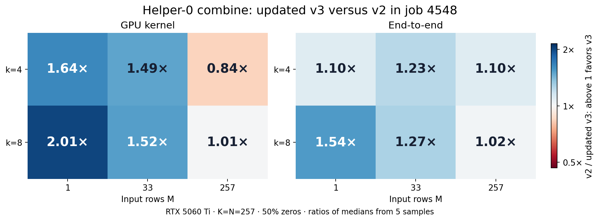
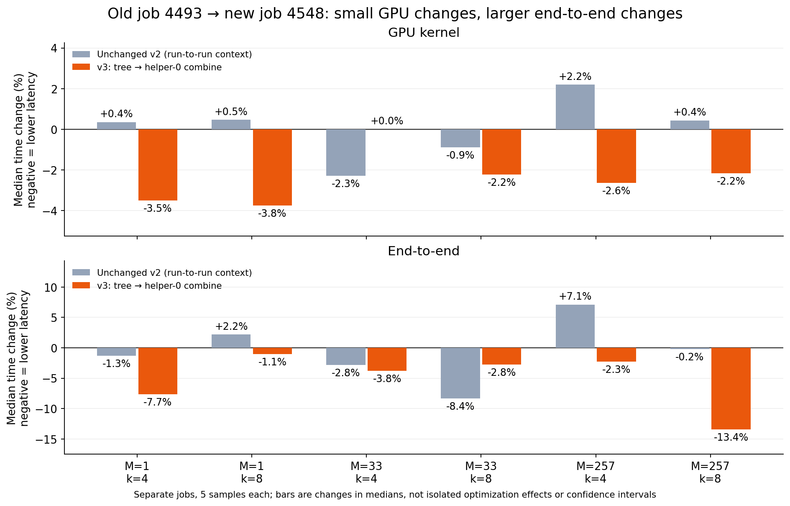
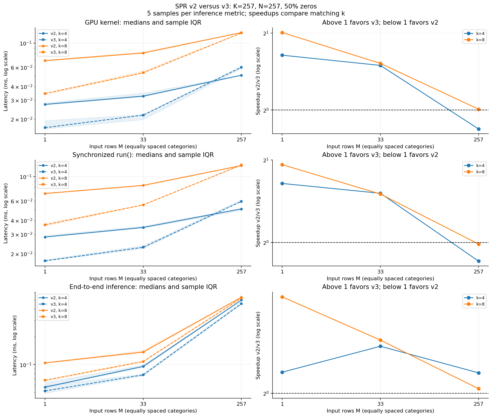

Job 4548 · RTX 5060 Ti · smoke run · five samples per metric. All recorded correctness/sanitizer checks passed.
The updated v3 retains small-batch wins. Across jobs, GPU medians are only 0–3.8% lower than previous v3; unchanged v2 also varies. This is evidence for a small possible benefit, the data do not establish an isolated optimization effect.
Detailed interpretation · Numerical comparison


